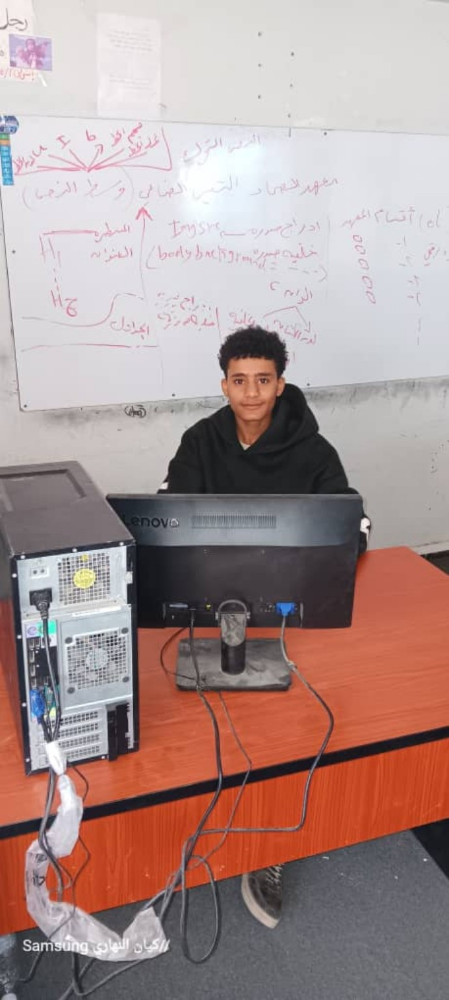

HTML
بناء صفحات الويب
أتعلم البرمجة وأبني مهاراتي في تطوير الويب وJavaScript وقواعد البيانات والشبكات.
اكتشف المزيد
أنا محمد رضوان اليفرسي، طالب مهتم بتقنية المعلومات والبرمجة. أحب تجربة التقنيات الجديدة وتحويل ما أتعلمه إلى مشاريع عملية.
بناء صفحات الويب
تصميم متجاوب
تفاعل وحركات
أساسيات الشبكات
بروفايل قابل للتطوير وإضافة مشاريعك وروابط التواصل.